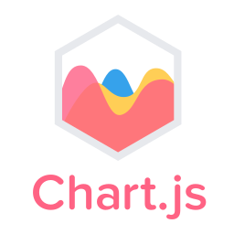
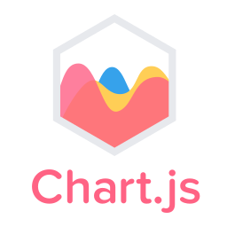

I'm a Software Engineer known for my persistence in improving things(I'm not always allowed to, unfortunately). In my day to day job, I usually first do what needs to be done and then ponder about what can be changed. Usually, a lot! Which means I spend a long amount of time thinking about what actually should change, and when I find out about something that should change I'm usually very confident about it. I usually don't mind being given the hardest work, as a matter of fact I usually enjoy it.
My Specialty
I'm skilled in both high and low-level system-wide architecture decision-making and long-term software planning. However, my strongest area is designing sub-systems (also known as key components)—pieces of the software expected to function as a cohesive whole, as you can see on my projects tab.
My Toolkit
I'm still at the early stages of my career so I'm very open to new tools, and usually pick a new one every 3 or so months, but currently these are my toys:
For web development(and also dashboard development)


 

For data engineering